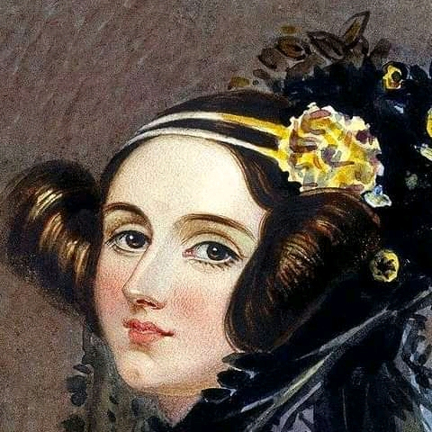

Augusta Ada King. countess of Lovelace was
an English mathematician and writer, chiefly known
for her work on Charles Babbage's proposed mechanical
general-purpose computer, the Analytical Engine. She has
been called as the world's first computer programmer.
What she did was write the world's first
machine algorithm for an early computing machine
that exited only on paper.

The first computer programmer
Timeline
- 1815 - Born as Augusta Ada Byron in London, England.
- 1828 - At the age of 12 she was passionate to fly. This made her to construct wings and wrote a book "flyology" after examining the anatomy of the birds.
- 1829 - She was paralyzed after a bout of measles.
- 1831 - She was able to walk with crutches on her recovery from the illness.
- 1832 - Her mathematical abilities began to emerge at the age of 17.
- 1833 - She met Charles Babbage, through their mutual friend, and her private tutor.
- 1835 - She married William King.
- 1838 - Her husband was made Earl of Lovelace thereby becoming Countess of Lovelace.
- Between 1842 and 1843 - Ada translated an article by Italian military engineer Menabrea on Babbage's proposed Analytical engine, supplementing it with an elaborate set of notes.
- 1844 - She commented to a friend about her desire to create a mathematical model of how the brain give rise to thoughts and nerves to feelings.("a calculus of the Nervous system").
- 1851 - She made an ambitious attempt to create a mathematical model for successful large bets.
- 1852 - She died of uterine cancer at the age of 36.
Read more about Ada Lovelace in WikipediA